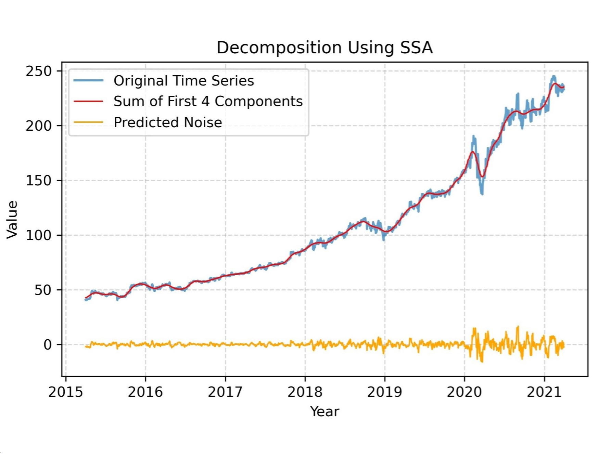
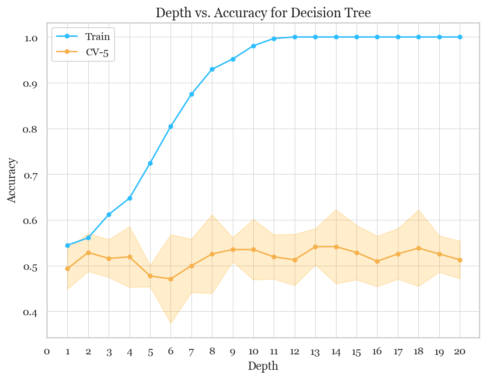
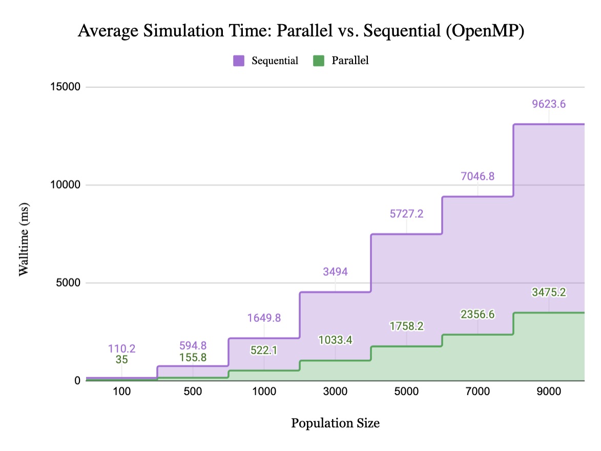
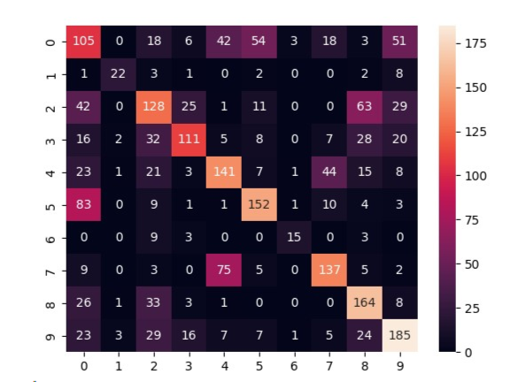

Projects
SVD-Based & ARIMA Model Comparative Analysis
Explored and compared the utility of Singular Value Decomposition (SVD)-based techniques and Singular Spectrum Analysis (SSA) with traditional ARIMA models in time series analysis. Using simulated and stock data, compared models' abilities at period estimation and decomposing data into signal and noise, with a particular emphasis on denoising.
Cup Champions
Built a dataset by combining and cleaning scraped player, team, and historical data. Used mixture of models, including decision trees, random forests, and logistic regression on the soccer data to create a stacked classifier to predict the winner of two teams playing a match. Used results to predict the winning teams of
the 2022 World Cup.
Genetic Walkers
Explored the use of genetic algorithms (GAs), inspired by evolutionary models, to optimize the training of walking agents. Implemented a baseline sequential model for training agents how to walk by optimizing joint torques and limb dimensions, as well as a parallelized implementation which significantly reduced training time compared to the baseline.
Sound Sift
Explored the use of Mel Spectogram data of audio collected around New York City to build a model classifying audio into one of 10 different types. Employed dimensionality reduction and non-linear models (logistic regression, random forest, CNN), with considerations made to hyperparameter tuning and class-imbalance issues.